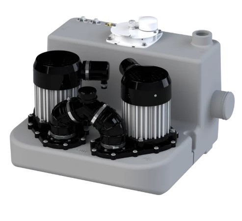
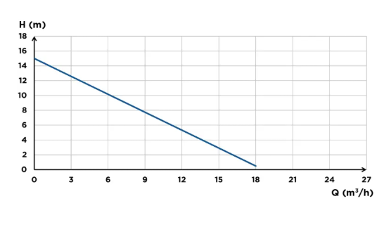
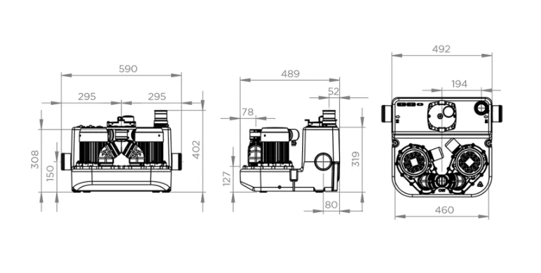
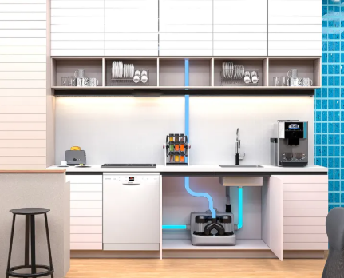

📞 032.347.0815~7
SFA KOREA 공식 대리점 1호 | 한국그런포스펌프(주) 프리미엄 공식 대리점 | 1995년 설립
✉ hyoilpump@daum.net
이중 펌프 자동 교대운전으로 신뢰성을 높인 상업용 그레이워터 리프팅 스테이션.
최대 90°C 고온 배수 처리, 단상 220V로 식당·카페·미용실 등 상업시설에 최적입니다.


| SANICOM 2 · 유압 사양 | |
| 최대 양정 | 10 m |
| 최대 배수 거리 | 120 m (수평, 1대 운전 시) |
| 유입구 수 | 다수 (양측면) |
| 유입구 외경 | Ø 40 / 50 / 80 mm |
| 토출구 외경 | Ø 32 mm |
| 환기구 외경 | Ø 50 mm |
| 최대 액체 온도 | 90°C (5분 이내) |
| 최소 샤워 트레이 높이 | 250 mm |
| 준수 규격 | EN 12050-2 |
| 운전 특성 | |
| 펌프 구성 | 이중 펌프 자동 교대운전 |
| 비정상 운전 시 | 2대 동시 운전 |
| 1대 고장 시 | 나머지 1대 자동 운전 계속 |
| 총 중량 | 26 kg |
| 전기 사양 | |
| 모터 구성 | 듀얼 모터 (이중 펌프) |
| 전류 방식 | 단상 (Single-phase) |
| 전압 | 220-240 V AC |
| 주파수 | 50-60 Hz |
| 소비 전력 (1대) | 3,000 W |
| 소비 전력 (동시) | 6,000 W |
| 제어 및 경보 | |
| 컨트롤 박스 | 내장형 |
| 수위 감지 | 공기압식 자동 감지 |
| 경보 출력 | 외부 경보 연결 가능 (250V/16A 건식 접점) |
| 경보 종류 | 수위 이상 / 장시간 운전 / 정전 / 펌프 이상 |
| 보증 기간 | 구매 후 2년 |
| 재질 구성 | |
| 탱크 | 폴리에틸렌 (PE) |
| 임펠러 | 고성능 멀티 채널 |
| 규격 준수 | |
| 준수 규격 | EN 12050-2 (그레이워터) |
| 원산지 | 프랑스 (Origine France Garantie 인증) |
| 보증 기간 | 구매 후 2년 |
| 보증 제외 사항 | |
| 이물질 손상 | 면, 콘돔, 생리대, 물티슈, 식품, 머리카락, 금속, 목재, 플라스틱 |
| 화학물질 손상 | 용제, 산, 기타 화학약품 |
단일 펌프로 충분한 소규모 시설은 Sanicom 1, 높은 신뢰성과 백업이 필요한 상업시설은 Sanicom 2를 선택하세요.
| 항목 | Sanicom 2 ★ | Sanicom 1 |
|---|---|---|
| 펌프 수 | 2대 (이중 교대) | 1대 (단일) |
| 고장 대비 | 1대 고장 시 자동 전환 | 고장 시 중단 |
| 소비 전력 | 3,000W × 2 | 750W |
| 최대 양정 | 10 m | 8 m |
| 최대 배수 거리 | 120 m | 80 m |
| 최대 온도 | 90°C (5분) | 90°C (5분) |
| 유입구 외경 | Ø 40/50/80 mm | Ø 40/50 mm |
| 외부 경보 연결 | ✅ 지원 | ❌ 미지원 |
| 중량 | 26 kg | 14 kg |
| 적용 규모 | 중형·대형 상업시설 | 소형 상업시설 |
💡 이런 환경에 추천합니다
높은 신뢰성과 백업 운전이 필요한 상업시설 · 고온 배수가 빈번하게 발생하는 식당·카페·주방 · 단일 펌프 고장 시 서비스 중단이 허용되지 않는 환경 · 원격 경보 모니터링이 필요한 시설
※ 사니콤 2는 그레이워터(생활오수) 전용입니다. 변기 오수(블랙워터) 처리가 필요하시면 사니큐빅 시리즈를 선택해주세요.


토출 배관(Ø32mm)은 역류방지 루프 형태로 설치하세요. 최고점이 하수관 역류 수위보다 높아야 하며 수평 최대 배수 거리는 120m입니다.
Ø50mm 환기관을 지붕 위로 연결해야 합니다. 기계식 환기팬이나 에어밸브에 연결하면 안 됩니다. 양방향 공기 흐름이 반드시 확보되어야 합니다.
접지가 필수이며 고감도 누전차단기(30mA)를 설치해야 합니다. 전기 연결 작업은 반드시 면허를 보유한 전기 기술자가 수행해야 합니다.
월 1회 이상 최소 2회 기동 사이클을 확인하는 방식으로 정상 운전 여부를 점검하세요. 상업 시설은 3개월마다 전문 점검을 권장합니다.
SFA KOREA 공식 대리점 1호 효일종합상사가 최적의 모델과 설치 방안을 제안해 드립니다.